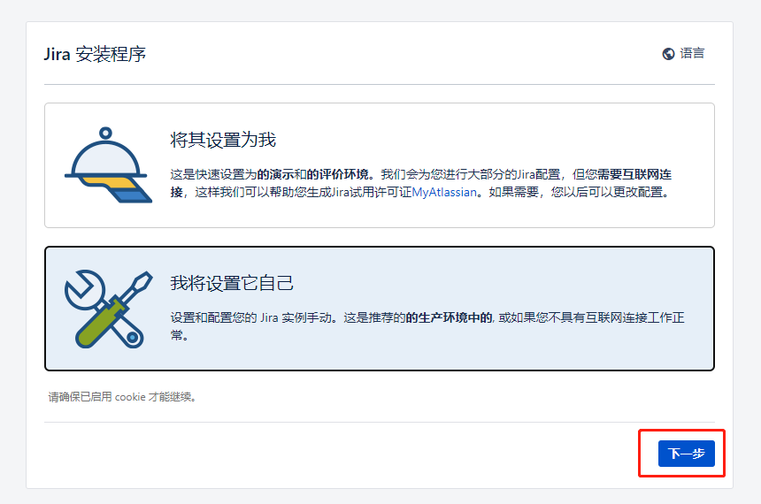

Jira安装教程
安装准备
数据库：mysql5.7.37
1
https://cdn.mysql.com/archives/mysql-5.7/mysql-5.7.37-1.el7.x86_64.rpm-bundle.tar下载MYSQL数据库连接JDBC驱动
1
https://mirrors.aliyun.com/mysql/Connector-ODBC/8.0/mysql-connector-odbc-8.0.22-1.el8.x86_64.rpm下载mysql连接jar包
1
https://repo1.maven.org/maven2/mysql/mysql-connector-java/8.0.28/mysql-connector-java-8.0.28.jar下载破解包
1
https://zhile.io/2018/12/20/atlassian-license-crack.html下载jira包
1
https://www.atlassian.com/software/jira/update
安装部署
安装mysql5.7.37
解压安装包到mysql目录下
1
tar xf mysql-5.7.36-1.el7.x86_64.rpm-bundle.tar -C ./mysql/yum安装mysql数据库
1
yum install ./mysql/*获取mysql数据库密码
1
grep 'temporary password' /var/log/mysqld.log 获取数据库密码配置数据库mysqld
1
2
3
4
5
6
7
8
9#在/etc/my.cnf
default-storage-engine=INNODB
character_set_server=utf8mb4
innodb_default_row_format=DYNAMIC
innodb_large_prefix=ON
innodb_file_format=Barracuda
innodb_log_file_size=2G
#删除下列参数：
sql_mode = NO_AUTO_VALUE_ON_ZERO启动mysql数据库服务
1
systemctl start mysqld访问数据库
1
mysql -uroot -p修改密码安全策略
1
2set global validate_password_policy=0;
set global validate_password_length=1;修改数据库密码
1
set password for root@localhost=password('123456');创建jira数据库
1
CREATE DATABASE jira CHARACTER SET utf8mb4 COLLATE utf8mb4_bin;授权jira数据库
1
2
3
4
5
6
7# MySQL 5.7.0 - 5.7.5:⽤下⾯语句
GRANT SELECT,INSERT,UPDATE,DELETE,CREATE,DROP,ALTER,INDEX on jira.* TO 'jira'@'%'
IDENTIFIED BY 'jirapasswd';
# MySQL 5.7.6 and later (must also include the REFERENCES permission): ⽤下⾯语句
GRANT SELECT,INSERT,UPDATE,DELETE,CREATE,DROP,REFERENCES,ALTER,INDEX on jira.* TO
'jira'@'%' IDENTIFIED BY 'jirapasswd';
flush privileges;安装MYSQL数据库连接JDBC驱动
1
yum install ./mysql-connector-odbc-8.0.30-1.el8.x86_64.rpm -y
安装jira
jira二进制包赋予执行权限
1
chmod +x atlassian-jira-software-9.1.0-x64.bin执行安装包
1
./atlassian-jira-software-9.1.0-x64.bin注意：执行过程中提示enter回车或按y即可
复制mysql连接jar包以及授权
1
2
3cp mysql-connector-java-8.0.28.jar /opt/atlassian/jira/atlassian-jira/WEB-INF/lib/
chmod 644 /opt/atlassian/jira/atlassian-jira/WEB-INF/lib/mysql-connector-java-8.0.28.jar破解包agent /home/jira⽬录下
1
cp atlassian-agent.jar /home/jira/配置setenv
1
2
3vim /opt/atlassian/jira/bin/setenv.sh
#追加命令行
export JAVA_OPTS="-javaagent:/home/jira/atlassian-agent.jar ${JAVA_OPTS}"启动jira
1
/opt/atlassian/jira/bin/start-jira.sh
初始化配置jira
停用防火墙
1
2systemctl stop firewalld.service
systemctl disable firewalld.service访问网站，默认端口为8080
1
http://192.168.100.30:8080页面配置页面截图
- 选择我将设置它自己——》下一步

输入数据库连接相关配置，点击测试连接成功后，——》下一步
下一步
激活jira
1
2
3
4
5
6
7这⾥主要是试⽤激活程序 agent
参数说明：
-m ：指定邮箱
-n ：授权给的⽤户，默认同邮箱地址
-o ：组织
-p ：需要获取key的产品, jira为Jira Software;jc为jira Core的缩写
-s ：服务器 ID1
2
3
4
5#获取jira的激活码
java -jar atlassian-agent.jar -p jira -m 1024320609@qq.com -n 1024320609@qq.com -o myjira -s BV4N-CTSC-C846-TZFK
#获取jc的激活码
java -jar atlassian-agent.jar -p jc -m 1024320609@qq.com -n 1024320609@qq.com -o magedu -s
BV4N-CTSC-C846-TZFK把激活码粘贴只文本框——》下一步
输入管理员账号相关信息及账号密码

点击完成
默认中文，点击continue
选择头像——》下一步
jira安装完成
卸载jira
停⽌jira服务 /opt/atlassian/jira/bin/shutdown.sh
运⾏卸载程序 bash /opt/atlassian/jira/uninstall
删除⽬录，删除⽤户
1 | |
本博客所有文章除特别声明外，均采用 CC BY-SA 4.0 协议 ，转载请注明出处！